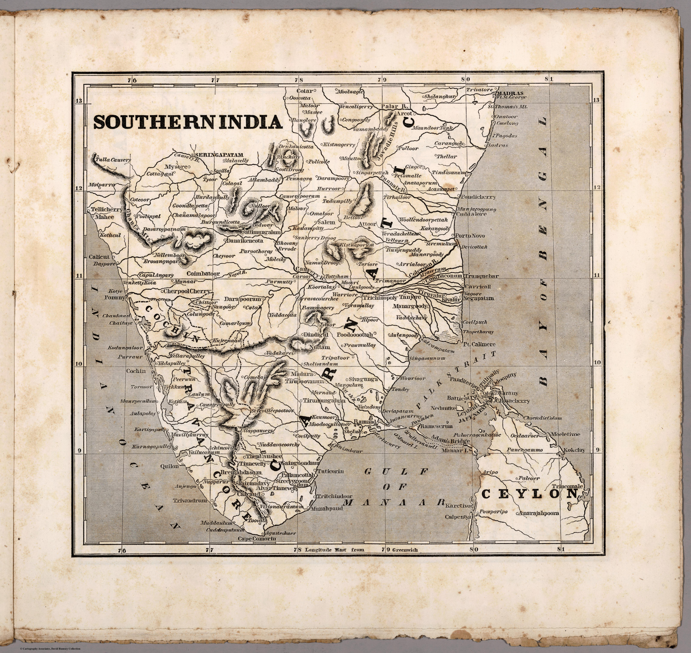

← Home Ground Bombay and Deccan

Click to enlargeA map of southern India from Sidney Morse's Cerographic Missionary Atlas, an American atlas charting the world's fields of Protestant mission. India seen, from New York, as a territory of souls to be reached.
Authorship and object
Sidney E. Morse (1794–1871), son of the geographer Jedidiah Morse and co-inventor of cerography (a cheap wax-engraving process), produced this uncoloured map for the Cerographic Missionary Atlas (New York, 1848), distributed gratis to subscribers of the New York Observer. Relief by hachures, prime meridian Greenwich.
A map of the mission field
The atlas set out to show where missionary activity was under way across the globe — from the American Indian Territory to Hawaii to India. Southern India appears here not as a possession or a market but as a field of evangelism, mapped for a religious public.
The gaze
This is the missionary gaze, and an American one. India is of interest as a place to be converted — its geography a guide to the distribution of populations and mission stations. It is the same impulse to make the subcontinent legible, redirected from commerce and conquest to the saving of souls.